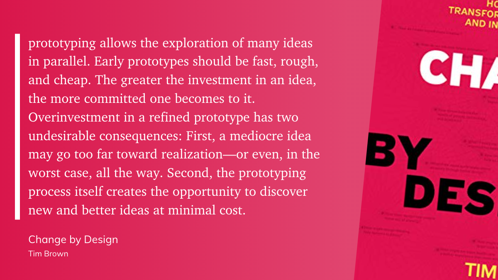

This week we'll continue to develop your Game Treatment by elaborating on the player experience and creating a paper prototype of the most important (and testable) part of your game.
Learning Objectives:
- Articulate the reasons we prototype on paper
- Apply guidelines for paper prototyping to create a testable prototype
- Work in your groups to critique and improve prototypes prior to playtesting
Week 6 Topics
6.1 Board Games
You may be asking yourself:"Board Games?? Why are we talking about board games? Isn't this a video game development program??"
Well, yes it is. However: when it comes to delivering a stellar player experience,one of the best (I would suggest one of the ONLY) ways to do that is to PLAYTEST.
In fact, we want to playtest our game ideas before we ever write a single line of code. Playtesting, first on paper, and then on simple digital protoypes, is the industry standard way of ensuring that a game has some chance of success!
That means we need to know how to develop a paper prototype of our game, using tools like cards, and dice, and sticky notes to represent mechanics and boards and sketches to represent spaces.
The podcast linked below is an interview with Stephanie Kwok, a board game designer and publisher. In the podcast, she talks about sooooo many things that will be relevant for you as you think about what part of your game to prototype on paper. She's talking about Board Game Design here, but board game design will be, in some ways, what we will be doing when we paper prototype.
Why do we paper prototype?
- Prototyping forces you to clarify rules, simplify mechanics, and produce a very streamlined version of your gameplay
- Listen for the discussion on finding the most fun part of your game at 0:05:38 - 0:06:19
- Listen for the discussion on having too many edge cases and desiging an elegant game at 0:30:09 - 0:30:33
- Prototyping and Playtesting allows you to see where you might “skip ahead”
- You will save a ton of time and a great deal of unecessary code if you can determine where your game
should
begin. Sometimes, it's not always at the beginning.
Listen for the discussion on paying attention to how a game begins at 0:19:18 - 0:20:28 - Prototyping and Playtesting helps you to see where your theme might have taken over and you’ve stuffed too much into the game
- Listen for the discussion on how beginning game designers put too many theme related elements into their game at 0:11:09 - 0:12:03
- Listen for the discussion on "Killing your Darlings"at 0:10:17 - 0:11:10
- Paper Prototyping and Playtesting saves time and money because you won’t code elements that simply aren't fun
- Listen for the discussion on playtesting changes and cutting a game in half at 0:17:18 - 0:18:30
Listen to the podcast here, or import it into your favourite podcatcher like iTunes, or hit play below:
6.2 Why Prototype?
We prototype to save time and money later: it's better to fail early in the process before money has been spent on programming and graphics, than later! It's always a good idea to test ideas early and often so that they can be modifed and improved, before bringing in a full team to work on something untested.
We prototype to learn
from Brown, T., & Katz, B. (2019). Change by design: how design thinking transforms organizations and inspires innovation (Vol. 20091). New York, NY: HarperBusiness.

Although it might seem as though frittering away valuable time on sketches and models and simulations will
slow work down, prototyping generates results faster.
The faster we make our ideas tangible, the sooner we will be able to evaluate them, refine them, and zero in
on the best solution
Apple Mouse - Prototype
Believe it or not, Every product, new idea, invention, let alone a game requires a cheap prototype. One of the first prototypes of what would become the Apple mouse was just the ball from a roll-on deodorant stick and a butter dish from a Walgreens. It didn’t show any coding or mechanical workings of the mouse. All it had to do was illustrate a principle , whether such a mouse design will be acceptable to the user. Once the base of the product was iterated, they began coding and building around it..webp)
image source https://www.newyorker.com/news/news-desk/slide-show-the-birth-of-the-mouse
Prototypes should command only as much time, effort, and investment as is necessary to generate useful feedback and drive an idea forward. The goal of prototyping is not to create a working model. It is to give form to an idea to learn about its strengths and weaknesses and to identify new directions for the next generation of more detailed, more refined prototypes.
“Just enough prototyping” means picking what we want to learn about and achieving just enough resolution to
make that the focus.
Anything tangible that lets us explore an idea, evaluate it, and push it
forward is a prototype.
In the ideation space we build prototypes to develop our ideas to ensure that they incorporate the functional and emotional elements necessary to meet the demands of the market. As the project moves forward, the number of prototypes will go down while the resolution of each one goes up, but the purpose remains the same: to help refine an idea and improve it.
We've looked at many reasons why we would prototype our game on paper before ever writing a line of code; we might prototype because it will save money in the long run by eliminating game ideas or elements that don't work, for example.
But one primary reason why we prototype on paper is because it helps us to think better. The following video describes the role of prototyping and testing in the Design Thinking Process as "Distributed Cognition", or how we as humans don't just think with our brains: when we design, we also think with our environments.
Why we prototype
Thus, when you create a prototype, I want you to think how this piece of paper, or its rearrangement by players will add value to your game
Prototype fidelity
There are many different kinds of prototypes we might make when we're designing a game, including a high
visual fidelity digital prototype, when we prototype on paper. However, here we're going for LOW
visual
fidelity prototypes.
Learn more about prototype fidelity in this video:
6.3 Prototyping games on paper
Why prototype?
- Sketching on paper (and thinking through your rules and gameplay in the physical, analogue world) helps your brain to problem-solve in a different way than coding does.
- Paper prototypes can be developed for most types of gameplay to enable faster, sooner, and more frequent playtesting
Paper Prototyping tools
You can make a paper prototype from almost anything, but some tools can help make the process go faster. You don't need to go out and buy all of these supplies right away, but you might consider putting together a basic protoptyping kit and then adding to it as you need. I have highlighted in red those things that I have in my kit.
- 1. Large sheets of paper
- At most office supply stores, you can get easel-sized sheets of paper (something like 24 inches wide by 36 inches tall). These often come in a pad of several sheets, and some have a mild adhesive on the back of each sheet to stick them to walls to choose a hexagonal or square grid to handle free movement on an open grid game board.
- 2. Graph paper
- With large grid squares
- 3. Dice
- Most people have some d6 dice (normal six-sided dice) sitting around. As a game designer, it’s also really good to have some of the other varieties. Your local game store should have sets for sale that include all the dice normally used for d20 roleplaying games.
- 4. Cards
- Cards are a fantastic prototyping tool because they are so malleable. Create cards numbered 1–6, and you have a 1d6 deck.
- 5. Card sleeves
- Most gaming stores sell several different styles of card sleeves. Card sleeves were initially developed to protect baseball cards, and they were extended to the gaming industry with the rise of collectible card games like Magic: The Gathering in the ’90s. Each card sleeve is a protective plastic cover for an individual card, and there’s enough room inside of them for both a regular card and a slip of paper. This is great for prototyping because it means that you can print the cards for your prototype on regular printer paper and then put them into a sleeve in front of a regular playing card. The regular card will give the card enough stiffness to be shuffled without the time and expense of writing or printing on card stock. The sleeves can be used to keep different decks of designed cards separate.
- 6. 3x5 note cards
- Cut in half, 3x5 note cards are a great size for a deck of cards. At their regular size, they’re fantastic for brainstorming.
- 7. Post-It notes
- These simple little sticky notes are fantastic for quickly arranging and sorting ideas
- 8. Whiteboard
- Nothing says brainstorming like a white board. Be sure to have lots of colors of markers available. White boards tend to get erased often, so be sure to snap a digital photo of anything you write on one, that is at all worth keeping. If you have a whiteboard tabletop or a vertical whiteboard that is magnetic, you can also draw a game board on it, but I tend to prefer large sheets of paper for game boards because they don’t get erased as often.
- 9. Pipe cleaners / LEGO blocks
- Both of these can be used for the same purpose: quickly building little things. These could be playing pieces, set pieces, or really anything you can think of. LEGO blocks are a lot more sturdy, but pipe cleaners are much cheaper and more flexible.
- 10. A notebook
- As a designer, you might try a pocket-size notebook with unlined paper, but I like to use a graph paper notebook. The key element of your notebook is that it needs to be small enough to carry with you and have enough pages that you won’t be filling it up and replacing it every few weeks. Any time someone plays your game prototype, you should be taking notes. You always think you’ll remember the important things, but that’s often not the case.
The main reason we prototype: To Playtest
Case Study 1:
Bond, J. G. (2014). Introduction to Game Design, Prototyping, and Development: From Concept to Playable Game with Unity and C. Addison-Wesley Professional.]
This Initial Game Concept will pit a squad of player-controlled characters against a computer-controlled enemy squadron. Because this is a paper prototype for a digital game, we might start by making some sketches of how the final digital game might work. (note: these "sketches" have been generated by software for inclusion on Bond's book. They would originally have been sketched using a pencil and paper!)
Figure 9.2 shows a rough mockup of a turn. The character will then run along the line, and as the character approaches various cover points (areas of the map where a character can hide from incoming enemy attacks), the player has the option to tap on the cover point and have her character detour to that cover. The player can then swipe away from the cover to have the character hop out from behind cover and continue on the original path. Pressing Attack! at any time during the move will give the player a short amount of time to line up a shot and fire on an enemy.
Several elements of this game can be prototyped with paper:
- Map layout: In our code, we might procedurally generate the level maps for this game, but we don’t yet know what kind of maps and attacks. By paying attention to the choices made by the person playing the GM for the enemy forces in the game, we can learn how to design this AI.
- Weapon designs: Various weapons in the game will have different chances of hitting, damage amounts per shot, and so on. The paper prototype can help define what weapons are interesting in this space and how to balance them against each other.
- Finding the fun: While some of the fun of the final game will be the graphics, movement, and touch-based interaction (all of which can only really happen in a digital prototype), the core mechanic and the core fun in the game should come from the interesting tactical decisions that the player must make every turn and the necessity of guiding a small team to overcome challenging obstacles and a larger enemy force.
All of these can be discovered through the paper prototype.
Physical prototypes are critical for designing sophisticated electronic games. Many
famous electronic games are based on paper games. The system for digital role-playing games such as Diablo
II, Baldur’s Gate, EverQuest, Asheron’s Call, and World of Warcraft are derived from the paperbased system
of Dungeons & Dragons. Likewise, the system for the famous computer game Civilization is based on a
Civilization board game published by Avalon Hill. The designers and programmers of these games used the
paper-based originals to figure out what would work electronically. Many video game designers actually
started out as board game designers, including Warren Spector and Sandy Petersen.
Building and
revising
paper prototypes instills a deep understanding of gaming principles, and it does so in a setting that is not
bogged down by the complexities of software development. (Fullerton, p. 178)
Playable Paper Prototype (For Assignment 4)
The prototype below:-
- Shows how to play the game
- Allows players to play the game through the paper prototype
- Shows design of the character
- Shows the look of the screen
In your game design document, using the prototype:
Game 1: Dizzy Frogs
Game 2: Monkeys vs Mosquitos
Game 3
6.4 Assignment 4 - Create your paper-prototype
- Before Friday March 3, you should create a draft paper prototype of the game that you described in your
game treatment. It's ok if the idea is refined or slightly shifted and changed since submitting the Game
Treatment!
Work through the process as a team to generate a paper prototype. - Submit the draft Paper-prototype by March 3 under discussions to receive feedback
- Next, you must present the Final version of paper-prototype after making changes from the professors
feedback.
Each team must present their paper prototype in class in the week after the Reading week. (On Wednesday, March 8) - Maximum grades for your assignment 4 are based on your paper-prototype and the way you present it
- During your presentation, when critiquing a paper prototype,think about it in terms of how it functions
as a prototype. Does it
accurately represent something that could be tested? The artwork may be crude and the rules may be
rough,
but do they provide enough of an experience for someone to grasp this piece of the game and give
feedback?
Is it testable??
If this is the case, then the prototype is a success! - Finally after presentations of each team, you will playtest with your classmates in class, receive feedback and document it.
- Submit a pdf. file with documentation of the paper-prototype and feedback from playtesting on blackboard.
Click here To see an example of how to create a Paper Prototype for your Game
"Here are a few prototyping rules of thumb. Even with years of experience, I often find a prototype going nowhere and can usually trace the problem to not following one of these rules:
- Always Ask a Question:
- which will give you purpose, and have a hypothesis, which is a specific idea you are testing out. For example, you might be thinking about mouse-based control schemes for a school of fish. Your question is: How do I control these fish with a mouse? A hypothesis might be: Flocking will make the fish move together, and every mouse click will drop an invisible “bomb” that will act as a repulser upon every fish’s steering AI, and it will take a few seconds to complete exploding. A good way to make sure you aren’t going to waste time implementing ideas you don’t actually have, which happens to me more often than I’d like, is to diagram the idea on paper first and work out as many details with a pencil as possible. This also speeds up writing the prototype.
- Stay Falsifiable .
- Just like good science, you must validate the results of your experiment. Did your hypothesis work? Does your fish flock control scheme feel good to you? Do your friends find that it feels good? Does it work in the context of your game idea? You can never user test and playtest an idea too early. I have seen many cool ideas go down in flames because its owner was overprotective, didn’t think it was ready, didn’t believe the feedback they were getting, explained away people’s responses, or thought that only their opinion mattered. Eventually users will play with your work, and by then it will be much harder to fix the design. Incorporate the user into the design process as early as possible. Be honest with yourself and your players, and you will be richly rewarded. This one is easy for me because as a designer, my main intent is to entertain and transform other people, so I’m always interested in what effect my work has on others. Watching people use what you make will also make you a smarter designer.
- Persuade and Inspire
- We’re making entertainment and art — your prototype should be cool, fun, and excite people. If you and your peers are compelled, your players will be too. On the flip side, if something isn’t resonating with other people, perhaps your idea or approach should be reconsidered. Prototypes can be powerful persuasive devices. Keita Takahashi, the designer of Katamari Damacy, couldn’t convince anyone that rolling around a giant sticky ball would be fun. Until they played the prototype.
- Work Fast
- Try to minimize time to your first “failure” (rejecting a hypothesis), and don’t be afraid to push the eject button. A classic error is to spend months working on an engine, architecture, or something else that has nothing to do with proving out your core design idea. Prototypes don’t need engines. Prototypes are slipshod machines held together by bubble gum and leftover bits of wire that test and prove simple ideas as quickly as possible. If you find yourself weeks or months into a project with only an engine, you’ve failed. Perhaps you need to articulate a specific gameplay idea to validate. For me, the ideal window of time to start and finish a prototype (including design, implementation, testing, and iteration) is between two days to two weeks. Anything longer than that sets off alarm bells.
- Work Economically
- You’re making something small and playable, testable ONLY, so invest your effort wisely. To work fast, you must stay small: Don’t do too much at once or you’ll never make progress. Be realistic.
[Fullerton, Tracy. Game Design Workshop: A Playcentric Approach to Creating Innovative Games (p. 182-185). CRC Press.]
Assignment 4
Make sure you use the reading week as a team to prototype the main aspects of your game only.
Keep in mind that the prototype should be on paper and the game prortotype should be playable in class for the purpose of playtesting.
On March 8th, you must present your game prototype in class as a team.